When the solver finishes, its output is still a set of color decisions. This stage turns them into geometry: a Thickness map of colored material, and a white cap over the top that sets the print’s brightness and protects the color. See The Solve for how the colors are chosen.
The cap is built in two stacked tiers above the color stack. The boundary cap is the cap: a closed white surface that covers the color stack. It is always present (with a one-layer minimum), it closes over the colored material so no color edge is left exposed, and its thickness is what sets how bright each region reads — thicker white passes less light, so it reads darker. Its underside fits the color stack exactly; only its upper surface is shaped. The detail cap is the second tier — whole extra white layers added on top of the boundary cap. Where the boundary cap is the structural surface, the detail cap adds fine extra white only where it earns its place — gated on image detail and on whether the added white measurably improves the result, up to a layer ceiling — and it can be suppressed feature by feature for printability. It never lowers the boundary cap; it only adds above it.
From colors to heights, and the budget
Each solved color is a recipe of stacked colored layers; summed at each point they give the colored stack’s height above the white base. The top of that stack is the color ceiling. Total object height is a hard ceiling that includes the white base, so the cap may use only the budget left between the color ceiling and the target height — and the boundary tier is held within part of that budget, reserving room for detail. Cap thickness is quantized to whole printed layers and held at the one-layer minimum.
In a run with swaps, the color ceiling is different: every filament band is filled with white up to a flat, panel-wide ceiling, so the top of colors-plus-fill sits at one constant height everywhere rather than following each point’s own stack. The cap’s budget is measured from that flat ceiling, and it is a hard limit of its own — whatever the brightness arithmetic below asks for, the cap can never spend more than the height left above the bands. See Runs with Swaps.
The cap settings
A handful of settings shape the cap:
- Boundary cap — Detail Aware (default) or Smooth. Smooth shapes the boundary cap into one continuous outer surface that carries the tonal relief directly. Detail Aware keeps the boundary cap structural, preserves the solved appearance against the active color model, and places the remaining tonal relief in the detail cap instead — bounded by the Appearance budget. This is a Color-mode choice; Luminance always uses the smooth boundary cap.
- Appearance budget — for the Detail Aware boundary cap: the most extra predicted color error (in the model’s color space) allowed as the smoothed boundary cap departs from the raw optical cap. Lower values preserve the solved appearance more aggressively. (Default 0.008.)
- Smoothing radius — how much the boundary cap’s upper surface is smoothed. Lower values keep more tonal relief in the surface; higher values produce a cleaner, more contiguous cap. The smoothing is edge-aware — pulled back toward the unsmoothed surface near strong color or recipe edges — and the underside still fits the color stack exactly.
- Detail depth — the most whole white layers the detail cap may add above the boundary cap. It permits detail height; it does not force the detail cap to use every layer. (Default 5.)
- Shading balance — used in Luminance mode (below): whether the broad luminance shading is carried more by the smooth boundary cap or by fine detail-cap relief.
Color mode vs Luminance mode
The cap is built fundamentally differently depending on the Solve Mode — covered in full in Solve Modes.
In Color, the boundary cap is the brightness the color solve already chose: for each point, the cap thickness whose predicted stack best matched the target color. The source image’s own luminance plays no direct role. With the default Detail Aware boundary cap that solved surface is kept structural and appearance-preserving, its tonal relief carried by the detail cap; with Smooth it is smoothed into one continuous surface instead. The mandatory detail cap then adds a little extra white — up to Detail depth layers — wherever it measurably sharpens the result.
In Luminance, the source image’s brightness drives the cap. The boundary cap is held under a ceiling derived from that brightness — it cannot exceed the cap thickness the image’s own luminance implies, and Shading balance sets how much of the tone the smooth cap carries versus the detail cap — which keeps the smooth tier from consuming the whole budget. The detail cap then adds white toward the fuller luminance-derived relief, point by point wherever it measurably improves the predicted result, up to Detail depth layers; a printability check unique to this mode keeps that freely-added detail within budget. Together the two tiers reproduce the photo’s tonal structure as white relief — like a classic lithophane — on top of color.
Band fill changes the brightness arithmetic in a banded print, because white inside a band dims the light just as cap white does. In Color mode this takes care of itself: the solve chose every recipe with its band’s fill already included, so the cap those recipes imply is already correct. In Luminance mode the cap is derived from the source image’s brightness, so the fill must be subtracted explicitly: the cap targets are thinned by exactly the fill thickness beneath them, and fill and cap together — not the cap alone — reproduce the intended tone. Without that subtraction a banded Luminance print would come out darker than the photo asks.
Covering every surface
However the cap heights are derived, the cap is meshed as two parts of the same white material. A rigid guard sits one layer above each colored point and extends a short way to the side, shielding the exposed side walls of the color stacks so no color cliff faces the viewer bare. A freeform surface carries the rest of the cap up to its target height away from the colored regions. Before the result is accepted, every print layer is checked for exposed color and for white features — specks or pinholes — too small to print reliably; tiny faults are grown into printable footprints where possible and suppressed otherwise.
The finished cap heights, with the colored stacks, pass onward to be meshed. In a swap run, the filament bands were already fixed before the cap was built (Runs with Swaps). How the cap surface becomes mesh, and why it can carry finer detail than the solve grid, is covered in Export.
Figure for review

The color ceiling follows the top of each solved stack. Above it, the boundary cap provides continuous white coverage with a layer-quantized upper profile; localized detail layers add relief on top within the remaining height budget.